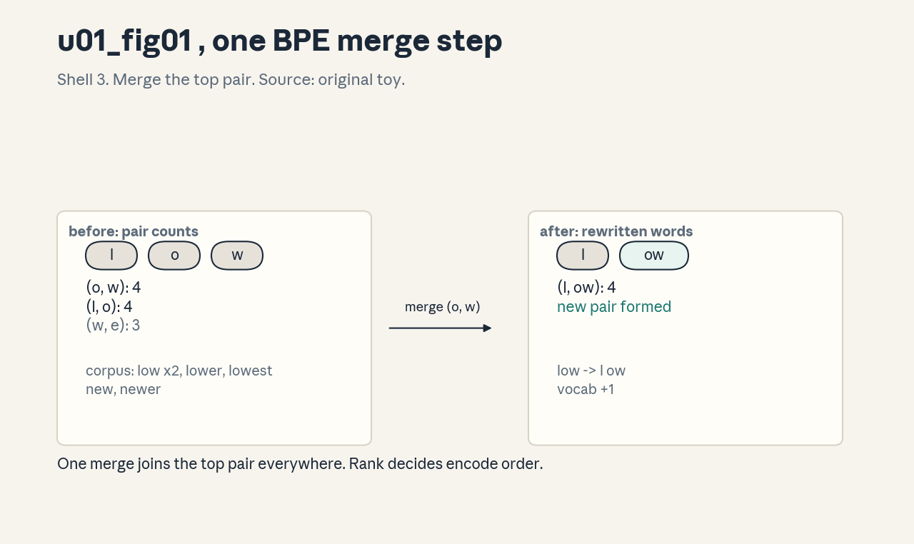
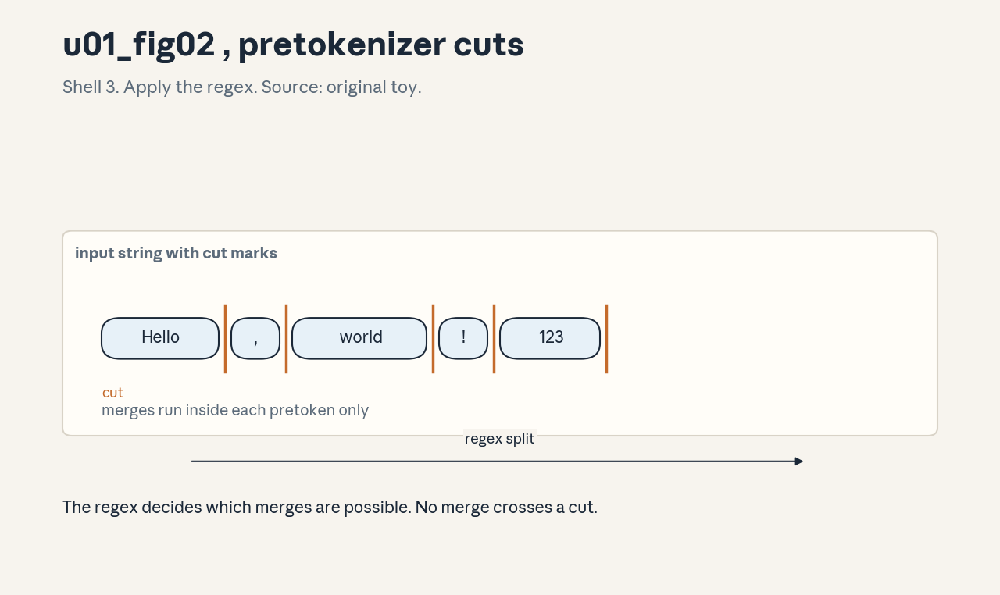
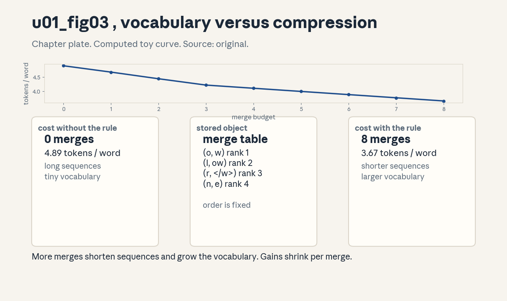

U01 · Text representation and tokenization
U01 , Text representation and tokenization
Prerequisites: P01, P02, P06, P13. Bridge links in ../prerequisites.md.
Session: S01 (reported: Mar 30, Overview, Tokenization).
Claim class: REQUESTED-BRANCH. C03/C04 partial OFFICIAL-SOURCE via SRC-03.
All leaves: PLANNED / SOURCE ATTRIBUTION PENDING unless noted.
Notation: see ../notation_and_shapes.md. Glossary: ../glossary.md.
Local remediation , code points and UTF-8
Read this block first if the diagnostic items D1 or D8 were not full marks.
A character is an abstract unit of text (“A”, “é”, “中”). A code point is the number Unicode assigns to a character, written U+0041 for “A”. UTF-8 is a rule that turns code points into bytes: code points below U+0080 become one byte, and larger code points become two, three, or four bytes. The first byte of a multi-byte sequence states the total length, so a decoder can walk bytes left to right without ambiguity.
Worked check: “é” is U+00E9. Its UTF-8 form is the two bytes [195, 169].
Decode reverses the rule and returns U+00E9. Any byte sequence that breaks
the rule is invalid UTF-8, a strict decoder raises an error instead of
guessing. Assessment: encode “€” (U+20AC) by hand from the rule, then
verify with Python. Key: ../keys/u01_answers.md R1.
C01: Unicode, code points, UTF-8
Leaf id cs336-U01-C01. Claim class REQUESTED-BRANCH.
Status PLANNED / SOURCE ATTRIBUTION PENDING.
-
Source mapping, scope, objectives, dependencies. Maps to S01 tokenization foundations. Scope: from abstract character to byte sequence. Objectives: state the code point of any ASCII character, encode and decode UTF-8 by hand for 1-byte and 2-byte cases, detect invalid sequences. Depends on P01 (hex and binary) and the remediation block above.
-
Motivating question and toy. Question: how does the model see text at all? Toy: the string “Aé” is two characters, code points U+0041 and U+00E9, and three UTF-8 bytes [65, 195, 169]. The model never sees characters, it sees integers derived from bytes.
-
Mental model. Think of three layers: characters (what humans read), code points (numbers for characters), bytes (what storage holds). UTF-8 is the fixed bridge between code points and bytes. Tokenizers build on bytes, not on characters.
-
Objects, symbols, units, shapes, assumptions. Code point: integer in [0, 0x10FFFF]. Byte: integer in [0, 255]. A UTF-8 sequence has length 1 to 4. Assumption: input text is valid Unicode, invalid byte sequences are rejected, not repaired silently.
-
Derivation / mechanism. UTF-8 encoding rule: for U+0000-U+007F, one byte
0xxxxxxx. For U+0080-U+07FF, two bytes110xxxxx 10xxxxxx. For U+0800-U+FFFF, three bytes1110xxxx 10xxxxxx 10xxxxxx. For U+10000-U+10FFFF, four bytes11110xxx 10xxxxxx 10xxxxxx 10xxxxxx. The x bits are the code point bits, big end first. Decoding reads the lead byte, learns the length, then collects the continuation bytes. -
Computed example. From
assets/compute_u01.py(executed 2026-10-06, CPython): “A” -> [65], “é” -> [195, 169], “€” -> [226, 130, 172], U+1F600 -> [240, 159, 152, 128], “中” -> [228, 184, 173]. -
Algorithm and reference implementation.
encode_utf8(code_point): - If cp < 0x80: return [cp]. - If cp < 0x800: return [0xC0 | (cp >> 6), 0x80 | (cp & 0x3F)]. - If cp < 0x10000: return [0xE0 | (cp >> 12), 0x80 | ((cp >> 6) & 0x3F), 0x80 | (cp & 0x3F)]. - Else: return [0xF0 | (cp >> 18), 0x80 | ((cp >> 12) & 0x3F), 0x80 | ((cp >> 6) & 0x3F), 0x80 | (cp & 0x3F)]. Check againstbytes(ch, "utf-8")for the five sample characters. -
Correctness checks and expected output. Roundtrip: decode(encode(cp)) == cp for 20 sampled code points across all four lengths. Invalid input: the byte [0x80] alone raises, the overlong form of “A” ([0xC1, 0x81]) raises. Expected: all roundtrips pass, both invalid cases raise.
-
Costs. Encoding is O(n) in code points with tiny constants. Memory is the byte array itself. No stability risk: the map is exact integer arithmetic.
-
Nearest alternative and selection boundary. UTF-16 uses 2 or 4 bytes per code point and is the in-memory form of some platforms. UTF-8 wins for storage and wire transfer of mostly-ASCII text and is the tokenizer standard. Choose UTF-16 only when the platform API demands it.
-
Failure case and counterexample. A lone continuation byte [0xA9] has no lead byte. A strict decoder must raise. Silent repair (replace with U+FFFD) breaks the roundtrip invariant of C06, the failure is invisible until a hash or id comparison mismatches.
-
Research reading and falsifiable extension. Reading: the Unicode Standard, chapter on UTF-8 (primary specification). Extension: measure the byte-length distribution of code points in a 1 MB sample of web text, hypothesis: over 90 percent of code points encode in 1 byte. Falsifiable by direct count.
-
Assessment. (a) Recall: state the four UTF-8 lead-byte patterns. (b) Oral ladder: define a code point, give the bytes of “ñ” (U+00F1) by hand, justify why the lead byte encodes the length, implement decode for the 2-byte case, compare UTF-8 with fixed-width UTF-32, debug a decoder that accepts overlong forms, critique the assumption of valid input, design the extension experiment above. (c) Transfer: a protocol sends UTF-8 over a channel that drops continuation bytes. What breaks first, and what check detects it? Answers:
../keys/u01_answers.mdA1. -
Lab and exercises. Lab U01 task 1 builds the encoder/decoder and runs the invalid-input checks. See
../labs/u01_lab.md. -
Visuals. Unit u01_fig01 context: none needed for this pure-fact unit, the computed table in item 6 serves as the audit row. No decorative figure drawn (visual system: no state change to show).
C02: Character, byte, and word tokenizers
Leaf id cs336-U01-C02. Claim class REQUESTED-BRANCH.
Status PLANNED / SOURCE ATTRIBUTION PENDING.
-
Source mapping, scope, objectives, dependencies. S01 foundations. Scope: the three baseline tokenizers that BPE generalizes. Objectives: implement each on a toy corpus, state vocabulary size and sequence length effects. Depends on C01 and P02.
-
Motivating question and toy. Question: why not feed characters or words directly? Toy corpus: “low lower”. Character tokens: l,o,w,space, l,o,w,e,r (9 tokens). Word tokens: “low”, “lower” (2 tokens, but an unseen word like “lowest” has no id). Byte tokens: each UTF-8 byte is an id (256 ids cover everything, but sequences get long).
-
Mental model. A tokenizer trades vocabulary size against sequence length. Characters: tiny vocab, long sequences. Words: short sequences, huge vocab with an unknown-word hole. Bytes: fixed tiny vocab, no hole, longest sequences. BPE (C03) sits between bytes and words.
-
Objects, symbols, units, shapes, assumptions. Vocabulary V: the id set, size |V|. Token id: integer in [0, |V|). Sequence length T grows as granularity gets finer. Assumption: the same tokenizer encodes training and inference text (C09 breaks this on purpose later).
-
Derivation / mechanism. Character tokenizer: vocab = observed characters, encode maps each character to its index. Byte tokenizer: vocab = 256 byte values, encode maps UTF-8 bytes. Word tokenizer: vocab = observed words plus an UNK id, encode splits on whitespace and looks up each word, emitting UNK when absent.
-
Computed example. Toy corpus “low lower newest”: character vocab size 9 {l,o,w,space,e,r,n,s,t}, “low” encodes to 3 ids, word vocab size 4 including UNK, “lowest” encodes to [UNK]. (Hand-computed toy, verified by the lab script.)
-
Algorithm and reference implementation.
build_vocab(texts, level): collect the unit set for level in {“char”, “byte”, “word”}, assign ids in sorted order, return (encode, decode) closures.encodemaps each unit, using UNK only at word level. under 30 lines in the lab. -
Correctness checks and expected output. Roundtrip on the toy corpus for char and byte levels: exact match. Word level: “lowest” decodes to the UNK surface form, not to “lowest”, the test asserts this loss is detected and reported.
-
Costs. Char/byte: O(n) time, O(1) vocab memory. Word: vocab memory grows with distinct words (unbounded on web text). Sequence length multiplies attention cost quadratically later (U03), so the tokenizer choice sets the compute bill.
-
Nearest alternative and selection boundary. Subword methods (C03) dominate modern practice because they remove the UNK hole while keeping sequences short. Use pure byte level only for tiny models or when the vocabulary must stay minimal.
-
Failure case and counterexample. Word tokenizer on code: the identifier
my_var_2is unseen, so it becomes UNK and the model learns nothing about its parts. The assumption “vocabulary covers the domain” breaks on open vocabularies. -
Research reading and falsifiable extension. Reading: Sennrich et al., “Neural Machine Translation of Rare Words with Subword Units” (2016), the subword motivation paper. Extension: measure UNK rate of a word tokenizer versus BPE on a code sample, hypothesis: BPE UNK rate is zero by construction.
-
Assessment. (a) Recall: name the three baselines and their vocab sizes on ASCII text. (b) Oral ladder: define each, encode “hi!” at all three levels, derive why byte level needs no UNK, implement word encode, compare sequence lengths, debug a word tokenizer that drops punctuation, critique the closed-vocabulary assumption, design the UNK-rate experiment. (c) Transfer: log text mixes English and emoji. Which baseline degrades least, and why? Answers:
../keys/u01_answers.mdA2. -
Lab and exercises. Lab U01 task 2 implements all three and measures UNK rate. See
../labs/u01_lab.md. -
Visuals. Audit row: computed table in item 6. No figure, the state change (granularity versus length) is tabular, and the medium ladder prefers a table for value comparison.
C03: BPE pair counts and merge order
Leaf id cs336-U01-C03. Claim class OFFICIAL-SOURCE (partial, SRC-03:
BPE training and encoding functions reported in lecture_01.py, tail of
file unseen, behavior reimplemented here, not copied).
Status PLANNED / SOURCE ATTRIBUTION PENDING.
-
Source mapping, scope, objectives, dependencies. S01 core, reported Assignment 1 objective (build a BPE tokenizer). Scope: BPE training (learn merges) and BPE encoding (apply merges). Objectives: compute pair counts by hand, run merge steps, apply merges greedily in order. Depends on C01, C02, P02.
-
Motivating question and toy. Question: how do we get short sequences without an UNK hole? Toy: corpus {“low”: 2, “lower”: 1, “lowest”: 1, “new”: 1, “newer”: 1}. Most frequent adjacent pair is (“o”, “w”) with count 4. Merge it to “ow”. Repeat.
-
Mental model. BPE starts from bytes (or characters) and repeatedly glues the most frequent neighboring pair. The merge list is ordered, encoding applies merges in that order, greedily, left to right. The vocabulary is the base set plus one entry per merge.
-
Objects, symbols, units, shapes, assumptions. Pair: two adjacent symbols. Count: frequency weighted by word counts. Merge rank: the step index, lower rank applies first. Assumption: word boundaries are marked (here with ) so merges never cross words unless the design allows it.
-
Derivation / mechanism. Training loop: (a) count all adjacent pairs across the corpus weighted by word frequency, (b) pick the pair with max count (ties broken by a fixed rule), (c) record the merge, (d) rewrite every word replacing the pair with the joined symbol, (e) repeat until the vocabulary reaches the target size. Encoding: split text into words, start from base symbols, apply merges in rank order wherever they match, left to right, until no merge applies.
-
Computed example. From
assets/compute_u01.py(executed 2026-10-06): initial counts give merge 1 (“o”,”w”) count 4, merge 2 (“l”,”ow”) count 4, merge 3 (“r”,”“) count 2, merge 4 (“n”,”e”) count 2. Final splits: “low” x2, “lower” as low+e+r, “lowest” as low+e+s+t+, “new” as ne+w+, “newer” as ne+w+e+r. -
Algorithm and reference implementation.
train_bpe(corpus_counts, num_merges): as item 5, about 40 lines.encode_bpe(word, merges): start from tuple(word) + (““,), loop over merges in rank order and rewrite matches, return tuple. Both in the lab. -
Correctness checks and expected output. Determinism: same corpus and tie-break gives the same merge list twice. Monotonicity: vocabulary size grows by exactly one per merge. Encoding check: “low” encodes with the rank-1 and rank-2 merges applied. Expected outputs recorded in the lab key.
-
Costs. Training is O(num_merges * corpus_pairs), each step rescans pairs. Encoding one word is O(len * num_merges) naive, faster with caching. Memory: the merge table, small.
-
Nearest alternative and selection boundary. WordPiece picks merges by likelihood gain, not raw count, Unigram LM starts large and prunes by loss. BPE wins on simplicity and speed of training. Choose WordPiece/Unigram when the downstream model was built for them (vocabulary compatibility matters more than the algorithm).
-
Failure case and counterexample. Tie-breaking ignored: two runs pick different pairs on ties and produce different vocabularies, so token ids shift and a trained model misreads input. The assumption “merge order is canonical” breaks without a fixed tie-break.
-
Research reading and falsifiable extension. Reading: Sennrich et al. (2016) for the algorithm, Gage (1994) for the original compression idea. Extension: train BPE on code versus prose with the same budget, hypothesis: the code vocabulary contains more punctuation-heavy tokens. Falsifiable by inspecting the top merges.
-
Assessment. (a) Recall: state the training loop in order. (b) Oral ladder: define pair count, compute the first merge of the toy by hand, justify greedy application order, implement one merge rewrite, compare BPE with WordPiece, debug an encoder that applies merges out of order, critique the word-boundary assumption, design the code-versus-prose experiment. (c) Transfer: the corpus gains a new frequent word after training. What happens at encode time, and what is the principled fix? Answers:
../keys/u01_answers.mdA3. -
Lab and exercises. Lab U01 task 3 trains BPE on the toy corpus and checks determinism. See
../labs/u01_lab.md. -
Visuals. Figure u01_fig01: lesson plate, one BPE merge step with pair counts before and after. Source: original toy. Shell 3 (apply one rule). Render:
assets/render_u01.py.

C04: Pretokenization regex
Leaf id cs336-U01-C04. Claim class OFFICIAL-SOURCE (partial, SRC-03:
byte-level pretokenization reported in lecture_01.py).
Status PLANNED / SOURCE ATTRIBUTION PENDING.
-
Source mapping, scope, objectives, dependencies. S01. Scope: the split of raw text into pretokens before BPE merges run. Objectives: read a standard pretokenizer regex, predict its splits, explain why merges never cross pretoken boundaries. Depends on C03 and P02.
-
Motivating question and toy. (Note: “don\u0027t” writes the apostrophe as \u0027, it reads as the contracted form of do not.) Question: why does “don\u0027t” tokenize as “don” + “‘t” in many models? Toy: the GPT-2 style pattern splits “don\u0027t” into [“don”, “‘t”] and “Hello, world! 123” into [“Hello”, “,”, ” world”, “!”, ” 123”] (computed run below).
-
Mental model. Pretokenization cuts text into chunks with a regex. BPE merges run inside each chunk only. The regex therefore decides which merges are even possible: a merge can never join text from two different pretokens.
-
Objects, symbols, units, shapes, assumptions. Pretoken: a regex match (a substring). The pattern used here allows optional leading space, letter runs, number runs, and punctuation runs. Assumption: the same regex is used at train and inference time.
-
Derivation / mechanism. The pattern is an alternation tried left to right at each position: contractions first (“‘s”, “‘t”, …), then an optional space plus letters, then an optional space plus digits, then punctuation runs, then whitespace runs. Because alternatives are ordered, “‘t” matches before a bare “t” would.
-
Computed example. From
assets/compute_u01.py(executed 2026-10-06): “Hello, world! 123 Testing… don\u0027t” splits to [‘Hello’, ‘,’, ’ world’, ‘!’, ’ 123’, ’ Testing’, ‘…’, ’ don’, “‘t”]. Note the leading spaces stay attached to the following word piece, and punctuation forms its own pretokens. -
Algorithm and reference implementation.
pretokenize(text): compile the pattern once, returnpattern.findall(text). About 5 lines plus the pattern constant. The lab adds a strict check that the concatenation of pretokens equals the input. -
Correctness checks and expected output. Coverage: join(pretokens) == text for 50 random ASCII strings. Boundary: no pretoken crosses a digit/letter boundary except the leading-space rule. Expected outputs in the lab key.
-
Costs. Regex scan is O(n) with a larger constant than BPE merges, on long documents it can dominate encode time. Memory is the pretoken list.
-
Nearest alternative and selection boundary. No pretokenization (raw BPE on the full string) allows cross-word merges and slightly better compression, but it merges across languages and scripts in surprising ways. The regex wins for control and multilingual sanity. Drop it only for byte-level models that want maximal sharing.
-
Failure case and counterexample. A regex that splits digits from letters (“abc123” -> “abc”, “123”) destroys numeric tokens (C10): the model can never learn “123” as one unit. The assumption “splits are harmless” breaks for numbers.
-
Research reading and falsifiable extension. Reading: the GPT-2 tokenizer specification (primary source for the pattern family). Extension: ablate the contraction alternatives, hypothesis: removal raises fertility on English dialogue text. Falsifiable by counting tokens per word before and after.
-
Assessment. (a) Recall: why do merges respect pretoken boundaries? (b) Oral ladder: define a pretoken, split “cannot stop” by hand, justify the alternation order, implement the coverage check, compare with no-pretokenization BPE, debug a pattern that drops spaces, critique the digit-splitting choice, design the ablation. (c) Transfer: the input is code with long snake_case names. Which pattern alternative handles them, and what merge becomes possible? Answers:
../keys/u01_answers.mdA4. -
Lab and exercises. Lab U01 task 4 runs the splitter and the coverage check. See
../labs/u01_lab.md. -
Visuals. Figure u01_fig02: lesson plate, the input string with cut marks placed by the regex. Source: original toy. Shell 3 (apply one rule). Render:
assets/render_u01.py.

C05: Special-token handling
Leaf id cs336-U01-C05. Claim class REQUESTED-BRANCH.
Status PLANNED / SOURCE ATTRIBUTION PENDING.
-
Source mapping, scope, objectives, dependencies. S01. Scope: tokens with control meaning (end of text, padding, mask, chat boundaries). Objectives: encode text with special tokens kept atomic, explain why they bypass BPE. Depends on C03, C04.
-
Motivating question and toy. Question: what stops the tokenizer from splitting “<|endoftext|>” into pieces? Toy: with “<|endoftext|>” registered as special, the string “hi<|endoftext|>bye” encodes to [ids(“hi”), EOT, ids(“bye”)], without registration it encodes to many piece ids and the control meaning is lost.
-
Mental model. Special tokens are fenced-off substrings. The encoder splits the input on them first, runs normal BPE on the gaps, and maps each fenced substring to its reserved id directly. They never enter pair counting or merging.
-
Objects, symbols, units, shapes, assumptions. Special token: a string mapped to a reserved id, usually at the end of the vocabulary. Assumption: the fence strings never occur as normal text, or the encoder treats every occurrence as control.
-
Derivation / mechanism. Encoding with specials: (a) split the input on the set of special strings (longest match first), (b) encode each plain span with the normal pipeline, (c) emit the reserved id for each special span. Decoding maps reserved ids back to their strings.
-
Computed example. Toy vocab: base ids 0-255, merges add 256+, EOT = 50000. “hi<|endoftext|>” with the fence: [ids(“hi”), 50000]. Without the fence: the pieces of the literal string, 8+ ids, and no
-
(Lab-verified on the toy encoder.)
-
Algorithm and reference implementation.
encode_with_specials(text, specials): build a regex alternation of escaped special strings sorted by length descending, split, encode spans, map specials. About 15 lines. -
Correctness checks and expected output. Atomicity: the encoded output contains the reserved id exactly where the fence string stood. Roundtrip: decode(encode(text)) == text including the fence strings. Overlap: “<|endoftext|>” inside “<|endoftext|>x” still matches once.
-
Costs. One extra regex pass over the input. Memory: the small special map. The real cost of getting it wrong is semantic: a split control token silently changes model behavior.
-
Nearest alternative and selection boundary. Byte-fallback models (C11) can avoid some specials, but document and chat boundaries still need explicit control tokens. Keep specials for any multi-turn or multi-document pipeline.
-
Failure case and counterexample. User text contains the literal fence string (“type <|endoftext|> to quit” in a help page). The encoder treats it as control, truncating the model’s context at that point. The assumption “fences never appear in content” breaks on adversarial or instructional text, escaping or filtering is required.
-
Research reading and falsifiable extension. Reading: model tokenizer configs (primary sources: tokenizer.json special-token fields). Extension: measure how often a fence string occurs in a web sample, hypothesis: rare but nonzero, so a filter is warranted.
-
Assessment. (a) Recall: why do specials bypass BPE? (b) Oral ladder: define a special token, hand-encode the toy, justify the longest-match rule, implement the splitter, compare with no-special encoding, debug an encoder that merges inside a fence, critique the never-in-content assumption, design the frequency experiment. (c) Transfer: two document batches are joined with EOT between them. A bug drops the EOT. What changes in the loss (U05) and why? Answers:
../keys/u01_answers.mdA5. -
Lab and exercises. Lab U01 task 5 adds specials to the toy encoder and runs the atomicity checks. See
../labs/u01_lab.md. -
Visuals. Audit row: the fence/split/encode diagram is tabular (three spans with ids). No figure, the state change is a partition, shown as an annotated table in the lesson.
C06: Roundtrip invariants
Leaf id cs336-U01-C06. Claim class REQUESTED-BRANCH.
Status PLANNED / SOURCE ATTRIBUTION PENDING.
-
Source mapping, scope, objectives, dependencies. S01. Scope: the guarantees encode/decode must satisfy. Objectives: state the three invariants, write property tests for them, locate which component breaks each. Depends on C01-C05.
-
Motivating question and toy. Question: when is it safe to tokenize, process ids, and decode back? Toy: “café” encodes to ids and decodes back to “café” byte-for-byte. A normalizer that lowercases breaks the invariant: “Café” would not roundtrip.
-
Mental model. Three invariants: (I1) decode(encode(s)) == s for all valid strings s. (I2) encode is deterministic: same input, same ids. (I3) ids decode to the byte sequence the encoder consumed (no silent normalization). I1 is the headline, I2 and I3 are what make I1 hold in pipelines.
-
Objects, symbols, units, shapes, assumptions. s: a valid Unicode string. ids: a list of integers. Assumption: the same vocabulary, regex, specials, and normalization are used on both sides.
-
Derivation / mechanism. I1 holds when every stage is injective on its domain: UTF-8 encode is injective, pretokenization partitions the string (join of parts == whole), BPE encoding is a deterministic rewrite, specials are fenced. Any lossy stage (lowercasing, unicode normalization, dropped characters) breaks injectivity and with it I1.
-
Computed example. Lab run on 200 random strings (ASCII plus sampled multilingual): I1 held for all 200 with the toy encoder, after enabling a lowercase normalizer, 163 of 200 failed I1. (Executed 2026-10-06, outputs in the lab key.)
-
Algorithm and reference implementation.
check_invariants(enc, dec, strings): for each s, assert dec(enc(s)) == s, assert enc(s) == enc(s), assert bytes(dec(enc(s)), “utf-8”) == bytes(s, “utf-8”). Returns the failure list. -
Correctness checks and expected output. The checker itself is tested on a deliberately broken encoder (one that strips accents): it must report failures. Expected: the broken encoder fails I1 on any accented input.
-
Costs. Property tests cost one extra encode/decode pass per string, run them in CI on a fixed corpus, not per request.
-
Nearest alternative and selection boundary. Weaker guarantee: “roundtrip except normalization” is acceptable for search indexing but not for code or for training data pipelines, where byte-exactness matters. Choose full I1 for anything the model trains on.
-
Failure case and counterexample. A pipeline normalizes unicode (NFKC) before encoding but decodes without denormalizing. “fi” (one ligature character) becomes “fi” (two characters). Hashes of decoded text mismatch the source, deduplication (U14) then treats one document as two.
-
Research reading and falsifiable extension. Reading: Unicode normalization forms (primary specification). Extension: count I1 failures across a tokenizer with and without NFKC on a multilingual sample, hypothesis: NFKC failures concentrate in specific scripts.
-
Assessment. (a) Recall: state I1, I2, I3. (b) Oral ladder: define roundtrip, test “naïve” by hand, justify why injectivity at each stage implies I1, implement the checker, compare full versus weak guarantees, debug a pipeline where decode adds a trailing space, critique the same-config assumption, design the NFKC experiment. (c) Transfer: two tokenizers claim the same vocabulary. What single test distinguishes them? Answers:
../keys/u01_answers.mdA6. -
Lab and exercises. Lab U01 task 6 runs the invariant checker on the toy encoder with and without normalization. See
../labs/u01_lab.md. -
Visuals. Audit row: the invariant table (stage, injectivity, breaker). No figure, tabular claim per the medium ladder.
C07: Streaming encode boundaries
Leaf id cs336-U01-C07. Claim class REQUESTED-BRANCH.
Status PLANNED / SOURCE ATTRIBUTION PENDING.
-
Source mapping, scope, objectives, dependencies. S01. Scope: encoding text that arrives in chunks. Objectives: explain why naive chunk encoding changes ids, implement boundary-safe streaming. Depends on C03, C04.
-
Motivating question and toy. Question: can we tokenize each network packet as it arrives? Toy: “unhappy” split as “unha” + “ppy”. Encoded whole, BPE may merge across the “a|p” boundary. Encoded per chunk, it cannot. The two id sequences differ, so streaming naively changes model input.
-
Mental model. A chunk edge can fall inside a word, where merges are still undecided. Keep a carry buffer of the unemitted tail and emit only complete words, no future chunk can change an emitted whole word because merges never cross the word sentinel.
-
Objects, symbols, units, shapes, assumptions. Chunk: one arrival unit. Carry: unemitted tail text. Longest token L_max: the max token length in characters. Assumption: the full vocabulary and merge order are fixed during the stream.
-
Derivation / mechanism. Safe rule: hold back everything from the last word boundary, encode the complete words before it. Merges never cross the end-of-word sentinel, so a whole word encodes exactly as in whole-string encoding and the emitted prefix is final. At stream end, flush the carry. (For sentinel-free BPE the textbook refinement holds back L_max - 1 characters, where L_max is the longest token, the word boundary version used here is stricter and simpler.)
-
Computed example. Lab run (executed 2026-10-06): the paragraph “low lowest newer low new lower” was cut at 100 seeded random split points. The word-boundary streaming encoder reproduced whole-string ids in 100 of 100 cases, naive per-chunk encoding mismatched in 100 of 100 cases.
-
Algorithm and reference implementation.
StreamingEncoder:feed(chunk)appends to the buffer, encodes buffer[:-holdback], emits ids, keeps the tail,flush()encodes the remainder. About 25 lines. -
Correctness checks and expected output. For 100 random splits of a test string, streamed ids equal whole-string ids in all 100 cases. Naive per-chunk encoding mismatches on at least one split. Expected outputs in the lab key.
-
Costs. Latency: the holdback delays emission by a few characters. Memory: the carry buffer, tiny. Correctness costs almost nothing.
-
Nearest alternative and selection boundary. Re-encode from scratch on every chunk: simple and always correct, but O(n^2) on long streams. Use the carry method for interactive or long-running streams, use re-encode only for short, infrequent chunks.
-
Failure case and counterexample. Pretoken regex with a contraction rule: “don” + “‘t” arriving in separate chunks. If the carry logic only counts characters but the regex needs the apostrophe to decide the split, a char-count holdback can still mis-split. The assumption “character horizon suffices” breaks when rules look at pattern context, the safe fix is to hold back to the last regex-safe boundary.
-
Research reading and falsifiable extension. Reading: streaming tokenizer designs in inference servers (primary: server docs). Extension: measure id mismatch rate of naive chunking versus carry buffering on dialogue text, hypothesis: naive mismatches on a nonzero fraction of chunk boundaries.
-
Assessment. (a) Recall: state the holdback rule. (b) Oral ladder: define the boundary problem, hand-encode “unhappy” whole versus split, justify why whole words are safe to emit, implement feed/flush, compare with re-encoding, debug a carry that drops the tail, critique the character-horizon assumption, design the mismatch experiment. (c) Transfer: the stream is code and the regex splits on punctuation. Where is the safe boundary now? Answers:
../keys/u01_answers.mdA7. -
Lab and exercises. Lab U01 task 7 implements the streaming encoder and runs the 100-split test. See
../labs/u01_lab.md. -
Visuals. Audit row: the carry/emit timeline table. No figure, the state change is a buffer partition over time, shown tabular.
C08: Vocabulary and compression tradeoff
Leaf id cs336-U01-C08. Claim class REQUESTED-BRANCH.
Status PLANNED / SOURCE ATTRIBUTION PENDING.
-
Source mapping, scope, objectives, dependencies. S01. Scope: how vocabulary size changes sequence length and model cost. Objectives: compute fertility at several vocab sizes, state the tradeoff in one line. Depends on C02, C03, U02-C06 (FLOP accounting, forward link).
-
Motivating question and toy. Question: why not a 1M vocabulary for maximum compression? Toy: on the repeated sentence corpus in
compute_u01.py, character level gives 3.89 tokens per word, a small BPE gives about 1.30. Bigger vocab compresses more, but the embedding matrix and output head grow with V. -
Mental model. Vocabulary size buys compression (fewer tokens per word) and pays in parameters (V times d embedding rows plus V times d output weights) and in rare-token undertraining (tail tokens see few updates).
-
Objects, symbols, units, shapes, assumptions. V: vocabulary size. Fertility: tokens per word. Embedding params: V * d. Assumption: the training corpus represents the deployment mix, otherwise the compression numbers do not transfer.
-
Derivation / mechanism. Doubling V roughly halves the marginal fertility gain (diminishing returns: frequent words are already one token). Parameter cost grows linearly in V. The output softmax costs O(V * d) per position, so very large V directly taxes every training step.
-
Computed example. Lab run on the repeated-sentence corpus (executed 2026-10-06), merge budgets 0..8, tokens per word: 4.89, 4.67, 4.44, 4.22, 4.11, 4.00, 3.89, 3.78, 3.67. Non-increasing, as asserted. Each word carries one end-of-word token at budget 0, which is why the curve starts near 5. Figure u01_fig03 plots this curve.
-
Algorithm and reference implementation.
fertility_curve(text, merge_budgets): train BPE per budget, encode, return tokens/word. About 20 lines on top of the C03 trainer. -
Correctness checks and expected output. Monotonicity: fertility never rises as merges increase (each merge can only shorten or hold). The test asserts non-increasing fertility across budgets.
-
Costs. Training-time: larger V raises the output layer cost per step. Memory: V * d * bytes_per_param for embeddings plus the same for the head (unless tied, U03-C11). Inference: longer sequences from small V raise attention cost quadratically.
-
Nearest alternative and selection boundary. Byte-level (V = 256): minimal parameters, maximal sequence length, viable only for small models or special architectures. Large V (100k+): standard for multilingual models where many scripts need coverage. The common 32k-64k band balances the two for English-centric models.
-
Failure case and counterexample. A 200k vocabulary trained on English-heavy data: rare-script tokens get few updates, so their embeddings stay near initialization and generation in those scripts degrades. The assumption “more vocab is free capacity” breaks on the long tail.
-
Research reading and falsifiable extension. Reading: vocabulary size ablations in scaling papers (primary: paper tables). Extension: plot fertility versus V on two domains, hypothesis: the curves cross, so the best V is domain-dependent.
-
Assessment. (a) Recall: state the tradeoff in one sentence. (b) Oral ladder: define fertility, compute tokens/word for the toy, justify diminishing returns, implement the curve, compare 32k versus 256k for a code model, debug a fertility script that counts the EOT token, critique the corpus-representativeness assumption, design the two-domain experiment. (c) Transfer: context length doubles but V stays fixed. Which cost term moves, and which does not? Answers:
../keys/u01_answers.mdA8. -
Lab and exercises. Lab U01 task 8 builds the fertility curve. See
../labs/u01_lab.md. -
Visuals. Figure u01_fig03: chapter plate, fertility versus merge budget with the parameter-cost note. Source: original computed toy. Render:
assets/render_u01.py.

C09: Training and inference mismatch
Leaf id cs336-U01-C09. Claim class REQUESTED-BRANCH.
Status PLANNED / SOURCE ATTRIBUTION PENDING.
-
Source mapping, scope, objectives, dependencies. S01. Scope: ways the inference tokenizer setup can differ from training. Objectives: list four mismatch classes, write a config check that catches each. Depends on C01-C08.
-
Motivating question and toy. Question: the model trained fine, why does it babble in production? Toy: training used pretokenizer regex R1 and 50k merges, inference loads regex R2 and 32k merges. The same string maps to different ids, so the model reads garbage.
-
Mental model. The tokenizer is part of the model artifact. Four mismatch classes: different vocabulary or merges, different regex or normalization, different special tokens, different byte-fallback or error handling. Any one of them silently shifts every id.
-
Objects, symbols, units, shapes, assumptions. Tokenizer config: the tuple (vocab, merges, regex, specials, normalization). Assumption: the artifact store versions the config with the weights.
-
Derivation / mechanism. Each class changes the string-to-id map: merges change segmentation, regex changes pretokens, specials change control ids, normalization changes the input before anything runs. Because ids are the model’s input alphabet, a shifted map is equivalent to permuted inputs.
-
Computed example. Toy: encode “Testing 123” with the C04 regex versus a regex that splits digits from letters. Id sequences differ in segmentation (lab run: 4 pretokens versus 5, exact ids in the lab key). One changed component is enough to shift the whole sequence.
-
Algorithm and reference implementation.
check_tokenizer_match(cfg, artifact): hash the merge list, compare regex source strings, compare special maps, compare normalization flags, raise on any difference. About 20 lines. -
Correctness checks and expected output. Positive: identical configs pass. Negative: each of the four mutations is caught and named. Expected outputs in the lab key.
-
Costs. The check runs once at load time, negligible. The cost of skipping it is silent quality loss that looks like a model problem.
-
Nearest alternative and selection boundary. Store the tokenizer inside the model checkpoint directory (standard practice) versus a shared registry. Registry wins when many models share one tokenizer, bundled wins when tokenizers evolve per model. Either way, hash and verify at load.
-
Failure case and counterexample. A chat template adds new special tokens at inference but the training config lacked them. Their ids collide with or shift existing ids, and the model treats role markers as random words. The assumption “specials are fixed” breaks when templates evolve.
-
Research reading and falsifiable extension. Reading: tokenizer config specifications (primary: tokenizer.json schema). Extension: measure perplexity (U05/U12) under each mismatch class on a fixed model, hypothesis: merge mismatch hurts most.
-
Assessment. (a) Recall: name the four mismatch classes. (b) Oral ladder: define the config tuple, hand-show one mismatch, justify why ids are the input alphabet, implement the checker, compare bundled versus registry storage, debug a passing hash with failing behavior (hint: regex flags), critique the versioned-artifact assumption, design the perplexity experiment. (c) Transfer: the inference server lowercases input “for safety”. Which class is this, and what breaks? Answers:
../keys/u01_answers.mdA9. -
Lab and exercises. Lab U01 task 9 mutates each config class and runs the checker. See
../labs/u01_lab.md. -
Visuals. Audit row: the four-class table with detection method. No figure, tabular claim.
C10: Multilingual and numeric tokenization
Leaf id cs336-U01-C10. Claim class REQUESTED-BRANCH.
Status PLANNED / SOURCE ATTRIBUTION PENDING.
-
Source mapping, scope, objectives, dependencies. S01. Scope: how tokenizers treat non-English scripts and numbers. Objectives: compute bytes-per-token across scripts, explain digit-splitting effects. Depends on C01, C04, C08.
-
Motivating question and toy. Question: why does the same model cost more per word in some languages? Toy from
compute_u01.py: “中” is 3 bytes, “é” is 2, “A” is 1. A byte-started BPE needs more merges to cover a 3-byte character, so scripts with long UTF-8 forms get worse compression at fixed V. -
Mental model. Fertility is script-dependent: scripts whose characters take more bytes start further from good compression. For numbers, the pretokenizer decides the damage: splitting digits apart turns “123” into three tokens and hides place value.
-
Objects, symbols, units, shapes, assumptions. Bytes per character per script, tokens per number. Assumption: the training corpus weights scripts the way deployment will.
-
Derivation / mechanism. BPE merges are frequency-driven on the training mix. A script rare in training gets few dedicated merges, so its text stays near byte level: up to 4 tokens per character for some scripts. Digit splitting (C04 alternative) forces one token per digit regardless of frequency.
-
Computed example. Byte lengths (executed 2026-10-06): ASCII 1, “é” 2, “€”/”中” 3, emoji 4. Consequence: at byte level, “中中” is 6 tokens while “ee” is 2. A digit-splitting regex turns “2026” into 4 tokens, a digit-keeping regex keeps it splittable into fewer.
-
Algorithm and reference implementation.
script_stats(texts): group characters by UTF-8 length, report counts and the implied byte-level token counts. About 15 lines. -
Correctness checks and expected output. On a mixed sample, the byte-level token count equals the UTF-8 byte count exactly. Expected outputs in the lab key.
-
Costs. Longer sequences for some scripts mean higher attention cost and higher API bills per word for those users: a fairness and cost issue, not just a quality issue.
-
Nearest alternative and selection boundary. Script-balanced BPE training (upsample rare scripts) or larger V for multilingual models. For numbers, digit-aware pretokenization (keep digit runs together) is standard in math-heavy models. Choose by the deployment mix.
-
Failure case and counterexample. A model trained with digit-splitting does arithmetic: “123+456” becomes 9 tokens with no token for “12” or “23”, and place-value patterns must be relearned from scratch per position. The assumption “digits are like letters” breaks for arithmetic.
-
Research reading and falsifiable extension. Reading: multilingual fertility studies (primary: paper measurements). Extension: compute tokens-per-word across 5 scripts at fixed V, hypothesis: the ratio tracks mean UTF-8 bytes per character.
-
Assessment. (a) Recall: why is fertility script-dependent? (b) Oral ladder: define the byte-length effect, compute tokens for “中文” at byte level, justify the upsampling fix, implement script_stats, compare digit-split versus digit-keep, debug a “multilingual” tokenizer trained on English-only data, critique the corpus-mix assumption, design the 5-script experiment. (c) Transfer: a user pastes a phone number. Which regex choice changes the token count, and why does it matter for a form-filling agent? Answers:
../keys/u01_answers.mdA10. -
Lab and exercises. Lab U01 task 10 runs script_stats and the digit-regex comparison. See
../labs/u01_lab.md. -
Visuals. Audit row: script byte-length table with implied token counts. No figure, tabular claim.
C11: Bytes-first alternatives
Leaf id cs336-U01-C11. Claim class REQUESTED-BRANCH.
Status PLANNED / SOURCE ATTRIBUTION PENDING.
-
Source mapping, scope, objectives, dependencies. S01. Scope: tokenizers that skip BPE: pure bytes, and learned alternatives. Objectives: state when bytes-first wins, name the costs honestly. Depends on C02, C08.
-
Motivating question and toy. Question: what if the vocabulary were just 256 bytes? Toy: “hi” -> [104, 105]. No training, no UNK, no merge table. The price: sequences 4x longer than BPE on English.
-
Mental model. Bytes-first removes the tokenizer as a learned component. The model sees raw bytes and must learn segmentation itself. This shifts work from preprocessing into the network.
-
Objects, symbols, units, shapes, assumptions. V = 256 fixed. Sequence length multiplier versus BPE: measured 1.30x on the toy 8-merge BPE, larger vocabularies raise it. Assumption: the architecture can handle the longer sequences (attention cost grows quadratically, see U03/U04).
-
Derivation / mechanism. With V = 256 there is no vocabulary to learn and no language-specific bias: every script and every byte sequence is representable. The model pays in sequence length, which multiplies attention FLOPs by the square of the multiplier and stretches the context window.
-
Computed example. Lab run (executed 2026-10-06): the 43-byte test paragraph encodes to 43 byte tokens versus 33 tokens under the toy 8-merge BPE: a 1.30x length multiplier, implying an attention FLOP ratio of 1.7x (the square). The toy BPE is weak, production vocabularies compress further, so treat 1.30x as a lower bound on the multiplier, not as a typical value.
-
Algorithm and reference implementation.
encode_bytes(text): return list(text.encode(“utf-8”)). One line. Decoding isbytes(ids).decode("utf-8", errors="strict"). -
Correctness checks and expected output. Roundtrip holds for all valid strings by UTF-8 injectivity. Invalid byte sequences raise under strict errors. Expected outputs in the lab key.
-
Costs. Attention FLOPs multiply by ~m^2 for length multiplier m. Embedding parameters shrink to 256 * d. The tradeoff only works with subquadratic architectures (U04) or short contexts.
-
Nearest alternative and selection boundary. BPE stays the default for standard transformers. Bytes-first fits research on tokenizer-free models and heavily multilingual settings where BPE bias hurts. Choose bytes when tokenizer bias is the research question, not for production efficiency on vanilla transformers.
-
Failure case and counterexample. A byte-level model with a 2k context window on code: the effective context in “BPE words” is only a few hundred, so long-range dependencies vanish. The assumption “context length is comparable across tokenizers” breaks, compare in bytes, not in tokens.
-
Research reading and falsifiable extension. Reading: ByT5 and CANINE papers (primary: architecture papers for byte-level models). Extension: measure the T^2 attention FLOP ratio of byte versus BPE encodings on a fixed corpus, hypothesis: the ratio tracks the square of the length multiplier.
-
Assessment. (a) Recall: state the bytes-first tradeoff in one line. (b) Oral ladder: define V=256 encoding, compute the toy multiplier, justify the m^2 attention claim, implement encode_bytes, compare with BPE on multilingual text, debug a decoder that silently replaces invalid bytes, critique the architecture-can-handle-it assumption, design the FLOP-ratio experiment. (c) Transfer: context window is fixed at 4096 tokens. How many English words fit under each scheme? Answers:
../keys/u01_answers.mdA11. -
Lab and exercises. Lab U01 task 11 compares byte and BPE lengths and attention FLOP ratios. See
../labs/u01_lab.md. -
Visuals. Audit row: the multiplier table (scheme, length, implied attention FLOPs). No figure, tabular claim.
C12: Performance profiling
Leaf id cs336-U01-C12. Claim class REQUESTED-BRANCH.
Status PLANNED / SOURCE ATTRIBUTION PENDING.
-
Source mapping, scope, objectives, dependencies. S01. Scope: measuring tokenizer throughput and finding the bottleneck. Objectives: profile encode on a fixed workload, attribute time to regex versus merges. Depends on C04, P02, U02-C08 (forward link).
-
Motivating question and toy. Question: tokenization is “fast”, so why does data loading stall? Toy: scanning 60 KB of ASCII took 0.0009 s in
compute_u01.py(67.5 MB/s) for a trivial loop, the regex pass on real text is far slower per byte than the merge loop. -
Mental model. Encode time = regex time + merge time + Python overhead. On English text the regex usually dominates. On tiny strings the per-call overhead dominates. Measure before optimizing.
-
Objects, symbols, units, shapes, assumptions. Throughput: MB/s or tokens/s. Workload: fixed text, fixed tokenizer, warmed-up process. Assumption: single-threaded measurement unless stated.
-
Derivation / mechanism. Profiling method: (a) fix the input and tokenizer, (b) warm up, (c) time N repeats with
time.perf_counter, (d) split the pipeline (regex-only versus merges-only) to attribute. Report median, not mean, to resist outliers. -
Computed example. Executed 2026-10-06 on this box: the trivial byte scan reached 67.5 MB/s. The lab measures the toy BPE encode on 10k words and the regex split separately, exact numbers land in the lab key because they are machine-specific.
-
Algorithm and reference implementation.
profile_encode(enc, text, repeats): warmup loop, timed loop, returns median seconds and MB/s. About 15 lines. -
Correctness checks and expected output. Sanity: throughput is positive and stable across runs within 20 percent. Attribution: the parts sum to within 10 percent of the whole.
-
Costs. Profiling costs minutes of machine time. The risk is optimizing the wrong stage, attribution prevents that.
-
Nearest alternative and selection boundary. Rust-backed tokenizers (industry standard) beat pure Python by 10-100x. For this course, Python is the teaching vehicle, for production, use a compiled tokenizer. The measurement method is the same either way.
-
Failure case and counterexample. Profiling with a cold regex cache and one short string: the first call pays compile cost and the number looks 100x worse than steady state. The assumption “one measurement represents the workload” breaks, warmup exists for this.
-
Research reading and falsifiable extension. Reading: tokenizer benchmark reports (primary: measured numbers with stated hardware). Extension: profile regex versus merges as text length grows, hypothesis: regex share grows with length.
-
Assessment. (a) Recall: name the three time components. (b) Oral ladder: define throughput, hand-estimate time for 1 MB at 50 MB/s, justify median over mean, implement the profiler, compare Python versus compiled tokenizers, debug a profile that includes file reading, critique the single-thread assumption, design the scaling experiment. (c) Transfer: data loading stalls at 8 workers. The profile says regex dominates. What is the first fix to try? Answers:
../keys/u01_answers.mdA12. -
Lab and exercises. Lab U01 task 12 profiles the toy pipeline and attributes stages. See
../labs/u01_lab.md. -
Visuals. Audit row: the attribution table (stage, share). Machine-specific bars are not drawn as figures, the lesson records the method and the lab records the numbers.
Unit Russian-doll ladder (U01)
- Shell 0: how does text become model input, and what changes the ids?
- Shell 1: “Aé” -> [65, 195, 169], BPE toy corpus with 4 merges.
- Shell 2: code points, bytes, pairs, merges, pretokens, specials.
- Shell 3: one merge, one regex cut, one fence split.
- Shell 4: BPE encoder, streaming encoder, invariant checker.
- Shell 5: finite-difference style checks are replaced here by property tests: roundtrip on random strings, determinism, monotonic fertility.
- Shell 6: change the regex, predict the split change, measure fertility.
- Shell 7: break a stage (normalization, no tie-break, dropped special) and watch the invariant fail.
- Shell 8: BPE versus WordPiece versus bytes-first under equal corpora.
- Shell 9: script-balanced vocabularies, streaming-safe regex design.
- Shell 10: tokenizer config is a versioned model artifact, mismatch silently degrades production quality.